Tournament-first web experience
- Home
- Campeonatos
- TVN Entresemana
- Fútbol 8
- Torneo Clausura 2025 F8
- Relevant section
Copateur Mobile · Product Design · UX/UI · AI-assisted workflow
Reframing Copateur's public, tournament-first web experience into a personalized product for authenticated Players—without losing the depth of the wider competition.
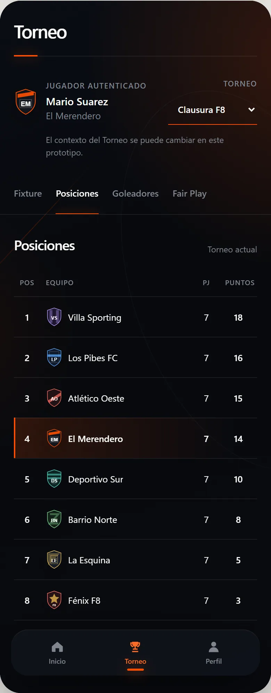
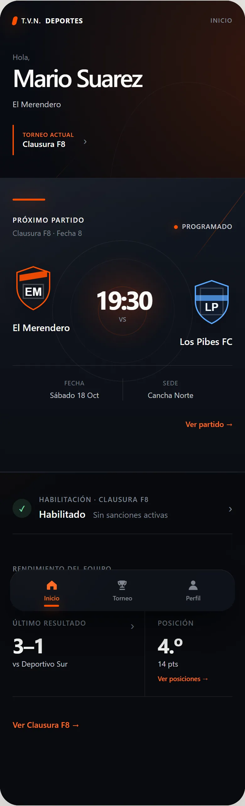
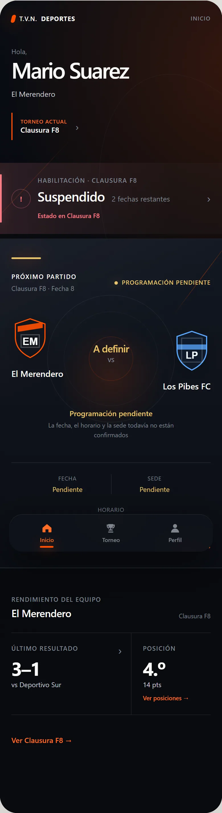
01 / Project context
Copateur organizes amateur football tournament information. Stakeholders were considering a future mobile experience after clients asked for faster, more personalized access than the existing mobile web journey.
The primary user is a Player participating in an amateur football Team. The product opportunity begins once the system knows who they are, which Team they play for, and which Tournament is currently relevant.
Authenticated Players need quick access to
02 / The challenge
A review of the live product revealed a navigation model organized around Tournament discovery—not around a known Player. These are product-review observations, used to frame the design opportunity.
Tournament-first web experience
Player-centered mobile opportunity
Tournament context had to be selected repeatedly.
The next Match lived inside Fixture navigation.
Personal information was distributed across Tournament sections.
Disciplinary shorthand could require interpretation.
03 / AI-assisted workflow
AI was used across the workflow as a thinking and production partner—not as a substitute for Product Design reasoning.
AI accelerated exploration and execution. Product reasoning, evidence interpretation, prioritization, critique, and final design decisions remained human-led.
Assumption critique, research planning, synthesis support, UX critique, and execution prompts.
Repository documentation, coded prototypes, visual exploration, design-system implementation, technical QA, and portfolio support.
Explored during early wireframing as a bridge between structured prompts and visual artifacts.
Source of truth, version history, decision history, and preservation of every design direction.
Clickable low-fi and high-fi prototypes with static GitHub Pages compatibility.
04 / Product framing
The early product direction was treated as a set of hypotheses to explore—not as established Player behavior.
A1 Personalization could reduce repeated filtering.
A2 The next Match may be the highest-priority information.
A3 Disciplinary status needs clearer communication.
A4 Team performance is likely to be a recurring need.
Kept secondary: notifications for sanctions and Match changes were considered, but not allowed to define the initial architecture before Player preferences could be understood.
J1 / Core
J2 / Core
J3 / Core
05 / Research approach
The approach combined stakeholder and product knowledge with expert evaluation and competitive pattern review. It established a credible basis for a conceptual direction without presenting assumptions as Player research.
SportEasy · TeamSnap · Sofascore
Useful patterns included persistent Team and Player context, prominent upcoming Match information, strong sports-information hierarchy, personalization, and selective notifications. Patterns informed exploration; they did not become requirements automatically.
06 / Key insights
Each insight was paired with a direct implication so the analysis could move into architecture and interaction.
Start from known Player, Team, and primary Tournament context.
Bring the most personal and time-sensitive information together on Inicio.
Let the next Match—and urgent exceptions—lead the hierarchy.
Pending scheduling and remaining suspension should never rely on ambiguous shorthand.
Restore relevant context at entry, while preserving deeper Tournament exploration.
07 / Information architecture
A stable Player identity connects to one Team. That Team may enter multiple Tournaments, and each Match belongs to a specific Tournament context.
Pivotal domain rule
Statistics, cards, disciplinary status, and eligibility belong to this relationship—not to the Player globally.
08 / User flows
The conceptual flows translate the domain model into a simple navigation promise: Inicio answers “what matters now,” while Torneo opens broader exploration.
Next Match
Eligibility
Team performance
Tournament exploration
09 / Low-fidelity exploration
Rather than polishing the first answer, the early phase tested where urgency, context, and the football experience should compete for attention.
Home A
Home B
Home C
Converged direction
The structure stays familiar while its hierarchy responds to urgency.
Next Match dominates. Eligibility stays visible and quiet.
Tournament-specific suspension gains priority without displacing Match and Team context.
10 / Interactive low-fi
A dependency-free HTML/CSS/JavaScript prototype made navigation and edge cases tangible before the visual system was committed.
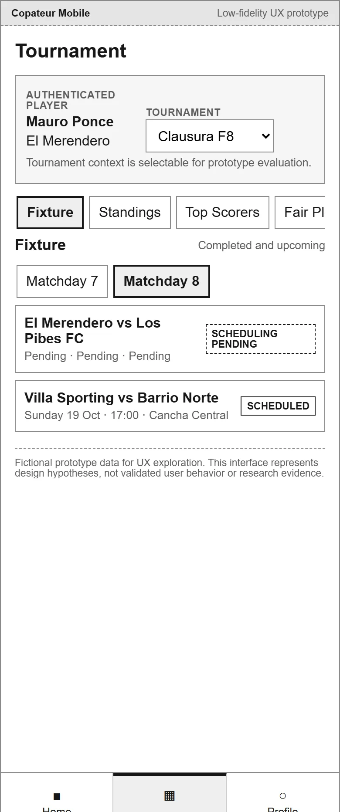
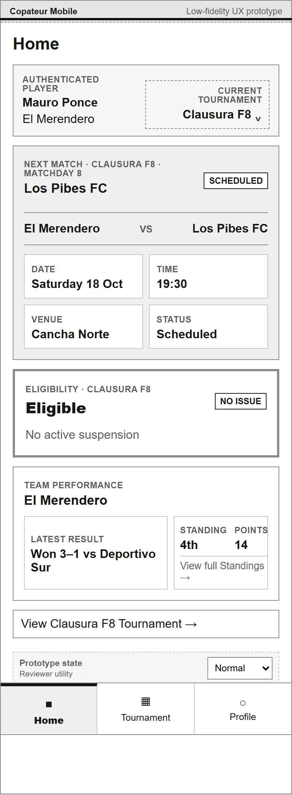
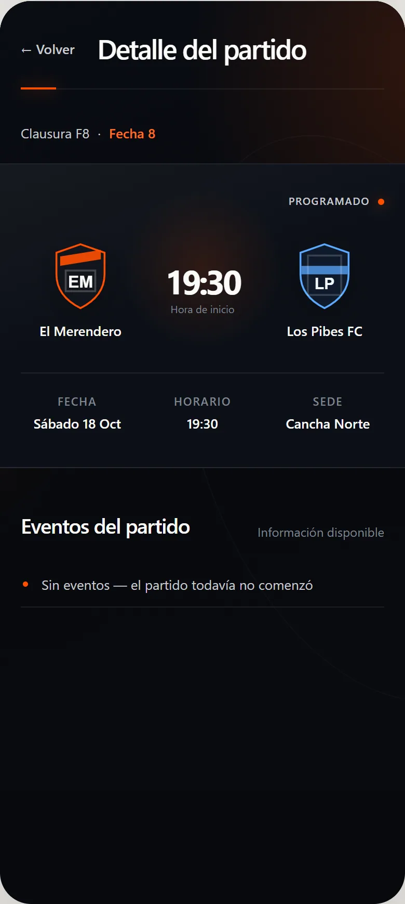
11 / Design iteration
The comparison was resolved through design critique and product-fit judgment, not user validation.
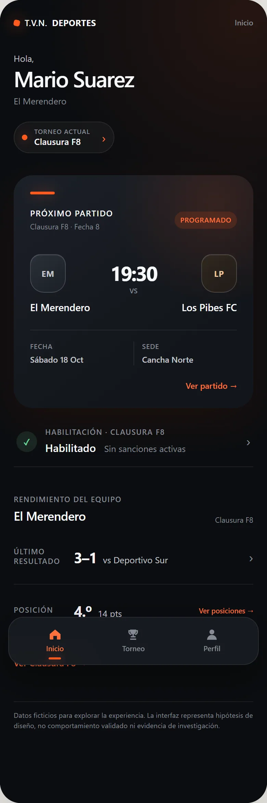
Direction 1
Cleaner than low-fi and more systematic, but still rigid and boxy. Heavy typography and a restrained accent limited its energy.
Direction 2
Stronger Match Hero, more editorial rhythm, a contemporary dark system, electric orange, fewer containers, and more selective type weight.
12 / Design system
The selected direction uses semantic tokens and repeatable patterns, while resisting the urge to turn every piece of information into a card.
Color roles
Type weight strategy
Spacing
Radius
Elevation
App Header·Tournament Context·Match Hero·Team Badge·Eligibility Status·Suspended Status·Team Performance·Stat with Icon·Section Navigation·Bottom Navigation
13 / Final experience
Spanish LATAM product language, recognizable Team context, explicit status, and an editorial sports hierarchy run through every screen.
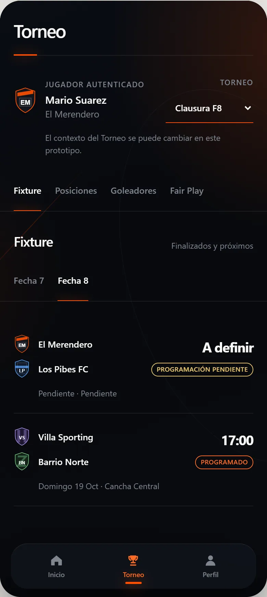
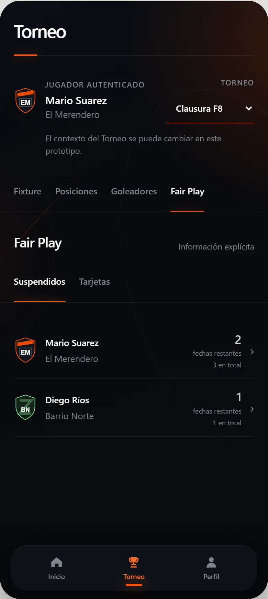
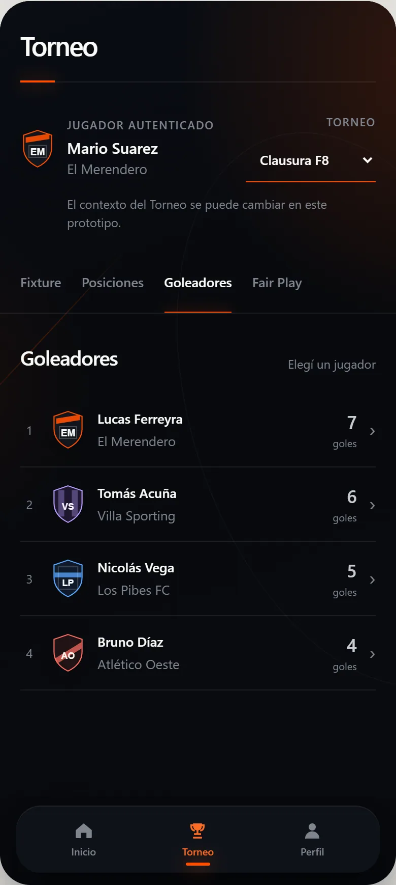
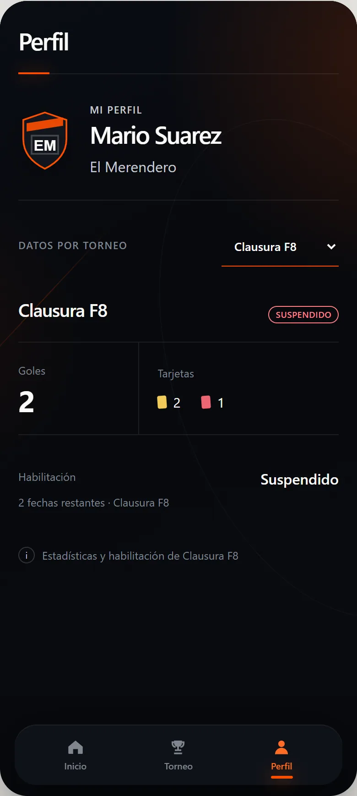
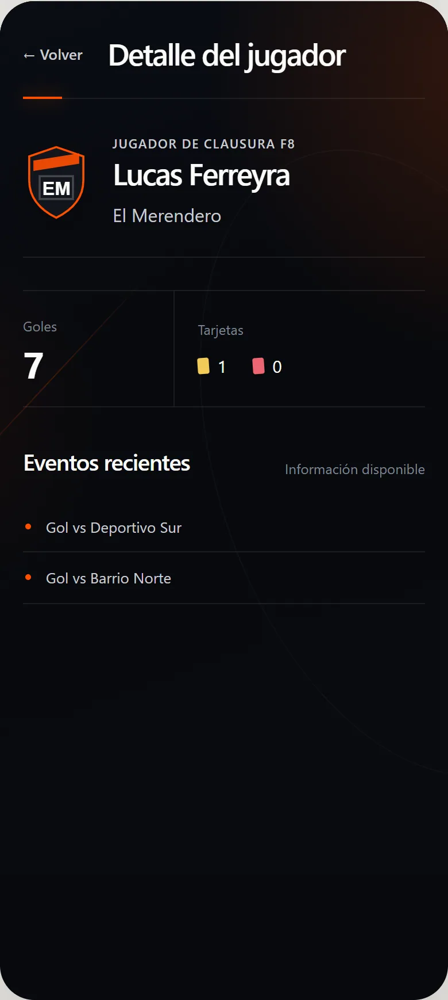
14 / State design
Status language, hierarchy, and supporting detail work together so essential football states remain explicit.
Pending
Information is known to be unresolved—for example, a confirmed Match with venue still pending.
Unavailable
The product says “No disponible” rather than inventing or silently hiding information.
15 / Developer handoff
The handoff documents not only surfaces, but state behavior, data dependencies, interactions, responsive constraints, accessibility basics, and the football domain rules that must survive implementation.
Component states, navigation relationships, Tournament switching, and back-context preservation.
Requirements by screen, Tournament-specific Player attributes, and pending versus unavailable values.
Responsive requirements and accessibility basics. CSS tokens can map into React Native, iOS, or equivalent production themes.
Final coded experience
Navigate the final mobile experience and explore the key Player flows.
Open prototype16 / Reflection
The workflow shortened the distance between an idea, a documented decision, a clickable artifact, and implementation-ready detail.